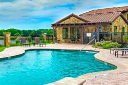

Tuscan Hills is an active lifestyle community on Unicorn Lake in Denton, Texas. While this is not an age-restricted community, the lifestyle, quality homes and age-targeted amenities appeal to today’s active adult homebuyer. The amenities include an Italian-style clubhouse with a fitness center and multi-purpose room. Outdoors there is a pool, patio area and trails throughout the community.